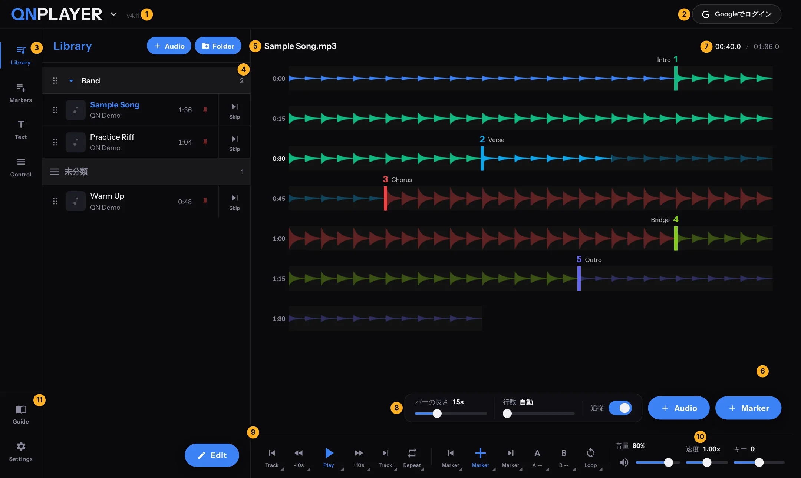
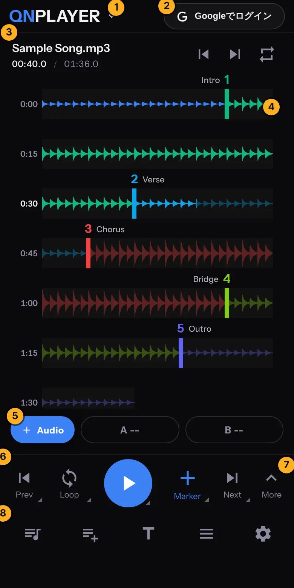
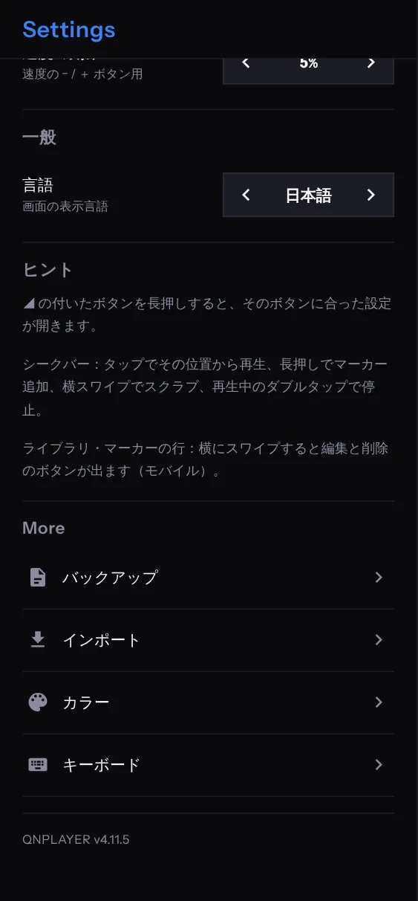

SCREEN
画面の見かた
各部の名前と役割を説明します。
画面はパソコンとスマートフォンで同じ部品でできています。幅が広いと横に並び、狭いと縦に積まれます。
パソコンの画面

| 番号 | 名称 | 役割 |
|---|---|---|
| 1ロゴ | 画面左上 | QNPLAYER のロゴです。押すとアプリの一覧が開き、QNVIDEO・QNTUNER・QNPITCH に切り替えられます。 |
| 2ログイン | 画面右上 | Google アカウントでログインします。ログインすると、プランの状態がアカウントに紐づきます。 |
| 3サイドメニュー | 画面左 | 上に Library、Markers、Text、Stem、下に Control、Settings が並び、押すとパネルが開きます。Stem はパソコン専用です。 |
| 4パネル | サイドメニューの右 | 開いたメニューの中身です。 |
| 5曲名 | 波形エリアの上 | 再生中の曲名です。 |
| 6波形シークバー | 画面中央 | 曲を波形で表示します。マーカーと A・B 点もここに出ます。 |
| 7時間表示 | 右上 | 現在位置と、曲の長さです。 |
| 8調整帯と Audio・Marker | 波形エリアの右下 | バーの長さ、行数、追従の調整と、曲とマーカーをすばやく追加するボタンです。 |
| 9下部コントロール | 画面下 | 再生、マーカー、ループの操作ボタンです。 |
| 10ミキサー | 下部コントロールの右 | 音量、速度、キーのスライダーです。 |
下部コントロールのボタン
| ボタン | 動作 |
|---|---|
| Track（左） | 前の曲へ移動します。 |
| −10s ／ +10s | 10 秒戻る／進みます。秒数は Settings の「スキップボタン」で変えられます。 |
| Play | 再生・一時停止します。 |
| Track（右） | 次の曲へ移動します。 |
| Repeat | 押すたびに、1曲、フォルダ、全曲、OFF と切り替わります。 |
| Marker（左・右） | 前・次のマーカーへ移動します。 |
| Marker（＋） | 現在位置にマーカーを置きます。 |
| A ／ B | 現在位置を A 点・B 点にします。もう一度押すと解除します。 |
| Loop | OFF、A-B、Section と切り替わります。 |
| 音量 ／ 速度 ／ キー | スライダーで調整します。 |
MEMOボタンの右下に小さな目印（◢）があるものは、長押しすると、そのボタンに合った設定が開きます。たとえば Loop の長押しでは、ループの前後の余白を変えられます。
スマートフォンの画面

| 番号 | 名称 | 役割 |
|---|---|---|
| 1ロゴ | アプリの切り替え | |
| 2ログイン | Google でログイン | |
| 3曲名と時間 | 右に前・次の曲とリピート | |
| 4波形 | タップで再生位置を決定 | |
| 5Audio・A・B | 曲の追加と A・B 点 | |
| 6ドック | 主な操作ボタン | |
| 7More | 音量・速度・キーなど | |
| 8アイコンバー | パネルを開く |
- 下部のドックには、前のマーカー（Prev）、Loop、再生、Marker（＋）、次のマーカー（Next）、More があります。
- More を開くと、バーの長さ・行数の調整帯と、音量・速度・キーのスライダーが、波形の上に重なって出ます。5 秒間さわらないと、自動で閉じます。
- 曲名の行はLibraryの1行と同じ表示です（PCはSKIP・PIN・EDITも使えます）。前・次の曲とリピートは、再生コントロールにあります。
- パネルは下から開きます。上のバーをドラッグするか、右上の矢印で閉じます。
サイドメニューの項目
| 項目 | できること |
|---|---|
| Library | 読み込んだ曲の一覧です。追加、フォルダ分け、並び替え、削除をします。 |
| Markers | この曲のマーカーの一覧です。メモ、色、Skip、Hide、削除を管理します。 |
| Text | この曲の歌詞やメモを書きます。 |
| Stem | 曲をパートに分けて練習します。パソコン専用です。録音もここで行います。 |
| Control | 音量、速度、オートスピード、キー、イコライザーを調整します。 |
| Settings | シークバーや再生の設定、言語、バックアップ、インポート、カラー、キーボード、ガイドの一覧です。 |
